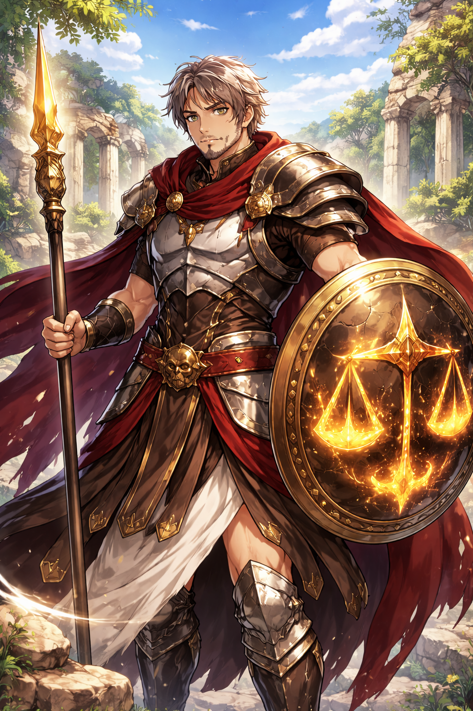

Durante o reinado de Tíndaro de Esparta, surgiu um nome sussurrado em tribunais e campos de batalha: Alastor, o Portador da Balança de Nêmesis.
O Juramento de Nemesis
Alastor não nasceu nobre, mas foi moldado pela disciplina espartana desde a infância. Diferente de seus irmãos de lança, ele não lutava por glória ou fama. Seu chamado veio quando, ainda jovem hoplita, testemunhou um comandante executar civis inocentes sob o pretexto de “vitória estratégica”.
Naquela noite, Alastor abandonou o acampamento e caminhou até um antigo santuário esquecido. Ali, ofereceu seu sangue e sua honra à deusa Nêmesis, jurando ser o instrumento da retribuição justa, jamais da vingança cega.
A deusa respondeu.
Não com palavras, mas com um peso invisível sobre sua alma.
A Primeira Sentença – O General Caído
Durante o terceiro ano do reinado de Tíndaro, um general espartano começou a acumular poder demais, desafiando reis aliados e humilhando cidades submetidas.
Tíndaro, temendo guerra civil, enviou Alastor — não como soldado, mas como juiz armado.
Alastor não duelou com o general.
Ele expôs seus crimes diante dos éforos, invocando a lei dos homens e a balança dos deuses. Quando o general tentou fugir, Alastor o deteve em combate singular.
Dizem que, ao cair, o general ouviu apenas uma frase:
“A Deusa Nemesis sempre cobra seu preço.”
Desde então, Alastor passou a ser conhecido como
O Juiz da Retribuição.
A Guerra das Três Cidades
Quando três pólis aliadas romperam seus juramentos e atacaram Esparta durante um festival sagrado, muitos clamaram por aniquilação total.
Alastor aconselhou Tíndaro a não ceder ao excesso.
Durante a campanha, Alastor liderou pequenas forças, atacando apenas alvos militares, poupando templos e civis. Em uma noite decisiva, infiltrou-se sozinho no conselho inimigo e desafiou seus líderes não à morte, mas ao julgamento divino.
Dois foram mortos em combate.
Um foi poupado — para carregar a vergonha de sua traição.
A guerra terminou rapidamente. Esparta venceu sem se tornar aquilo que combatia.
O Dia em que Enfrentou um Herói
Conta-se que um semideus, favorecido por Ares, começou a massacrar vilarejos aliados sob o pretexto de “forjar guerreiros fortes”.
Nem Esparta ousava enfrentá-lo diretamente.
Alastor foi enviado.
O combate durou um dia inteiro. O semideus era mais forte, mais rápido, mais feroz. Mas Alastor não lutava apenas com músculos — ele lutava com equilíbrio.
Quando o herói caiu, Nêmesis retirou sua bênção, deixando-o mortal no último instante.
Alastor não celebrou. Apenas deixou o corpo para os deuses julgarem.
Desde então, mesmo campeões divinos aprenderam a temer seu nome.
A Sentença de Menelau
Os anos avançaram como marchas longas demais.
O corpo de Alastor ainda resistia, mas sua alma carregava o peso de julgamentos que poucos homens suportariam. Quando Tíndaro deixou o trono e Menelau passou a governar Esparta, muitos acreditaram que o velho juiz finalmente seria liberado de seu fardo.
Foi então que Alastor fez seu último pedido formal.
Diante de Menelau, agora rei, ele não vestia armadura completa, apenas o manto simples de um servidor da lei divina. Com voz firme, mas cansada, declarou que sua missão estava cumprida. Que Esparta precisava de novos homens, não de velhas balanças rachadas pelo tempo.
“Esparta ainda vive das consequências dos excessos dos homens,”
disse o rei por fim.
“Enquanto houver arrogância, traição e juramentos quebrados… não há substituto para ti.”
A aposentadoria foi recusada.
Mas Menelau não foi cruel. Ele compreendia que nenhum homem pode carregar o peso de Nêmesis para sempre — e então revelou algo que mudaria o destino de Alastor.
Siegarth: O Herdeiro do Fardo
Menelau revelou a Alastor a existência de uma Criança entregue no templo de Nemesis, Siegarth. O menino foi entregue para Alastor para ser moldado não apenas como um guerreiro, mas como aquele que um dia poderá substituir Alastor no fardo de julgar os homens sob o olhar de Nêmesis. E assim Alastor o criou não so como Mestre e Mentor mais tambem como pai.
Atualmente, Alastor permanece em serviço como o Juiz de Esparta, enquanto observa o crescimento de Siegarth, cujo destino ainda está sendo tecido pelas moiras.